昆虫配图 · 词义选项
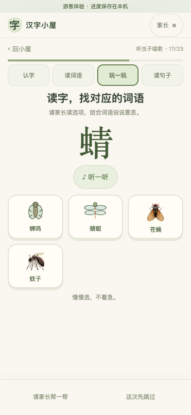
12 个不同浏览器场景通过；最终部署后另复测 4 个配图流程通过；保存 16 张应用截图。
完整词语精确匹配。图标不合适的具体事物补原创简笔画；抽象词暂用陪读提示。
打开可搜索的全部素材样张 · 查看前后对比报告 · 检查明细
934 个去重设计词语中，266 个系统图标、222 个简笔画、23 个色块／计数／符号，423 个保留陪读提示。图示不能替代词义审校；共读目前仍为词卡，未改成完整故事场景。旧发布包保持不变，本轮修正当前网页展示。

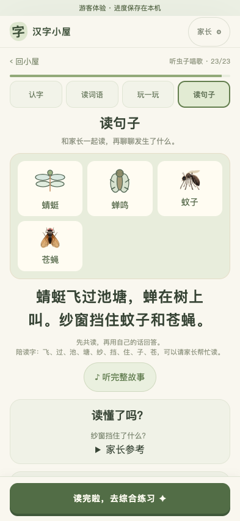
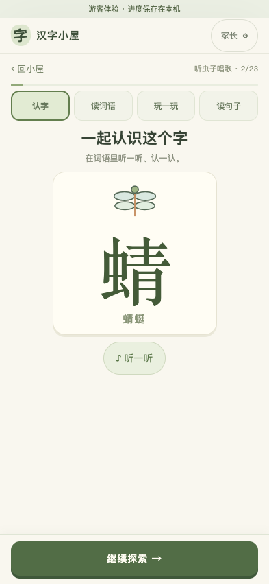
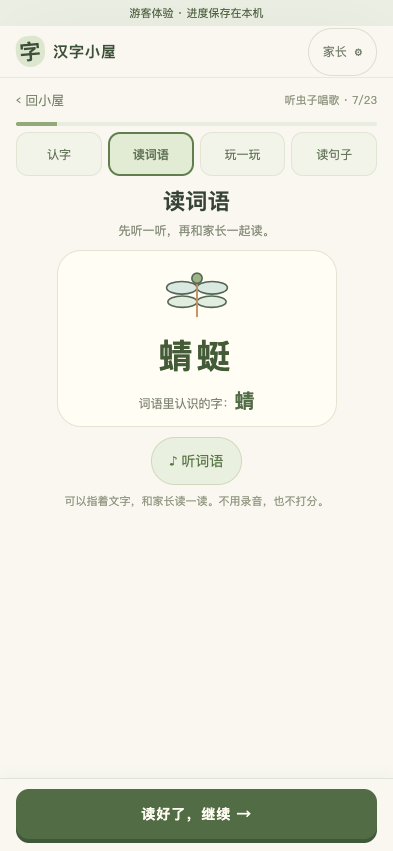
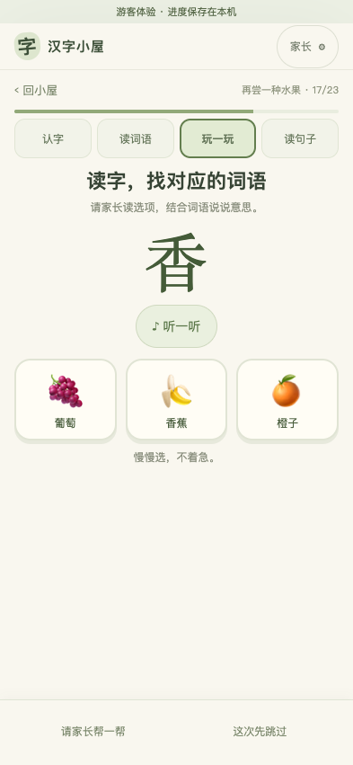
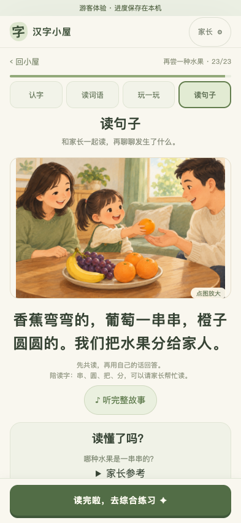
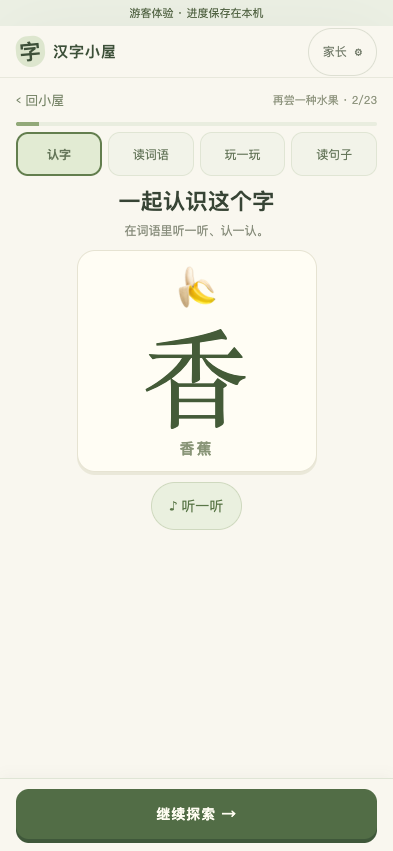
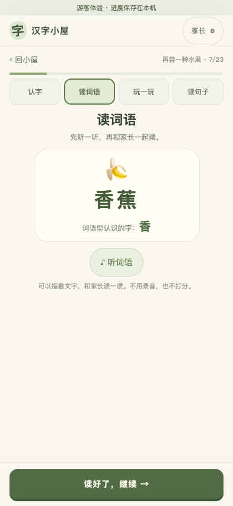
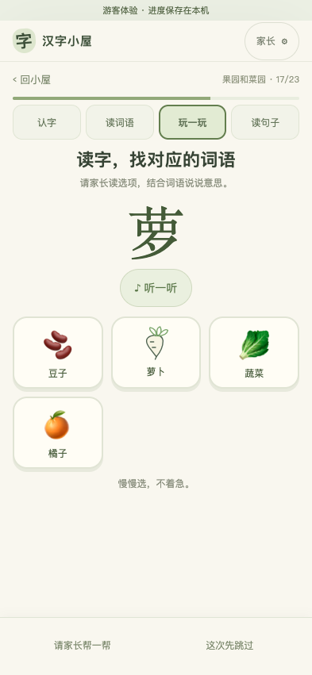
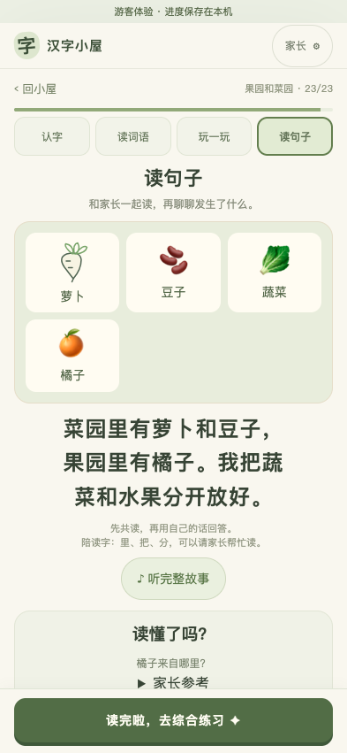
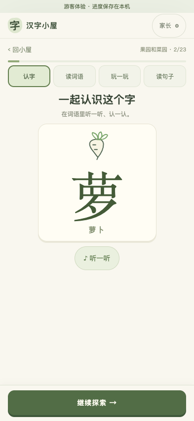
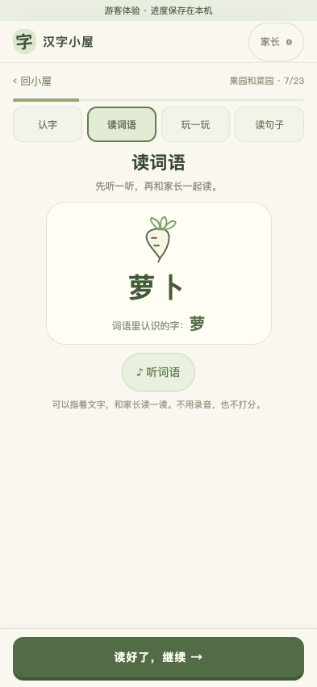
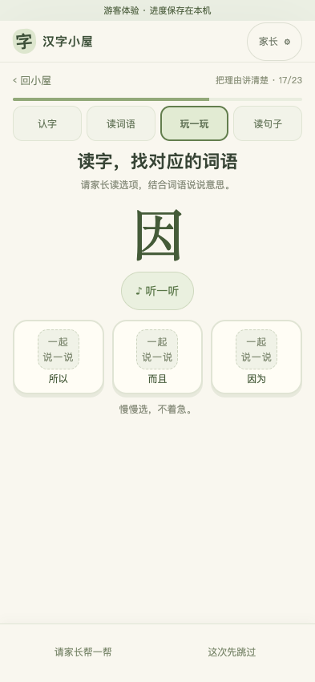
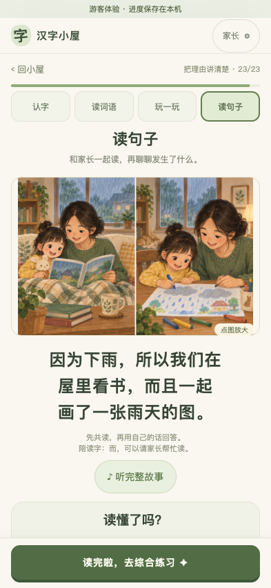
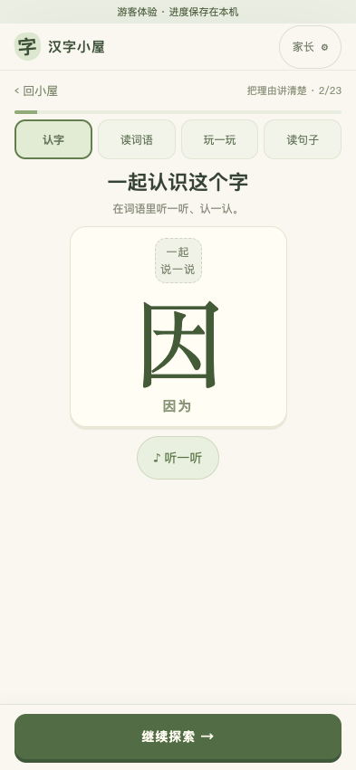
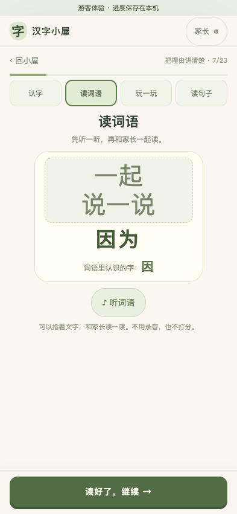